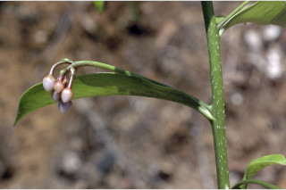
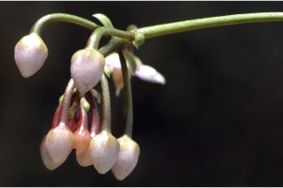
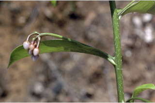
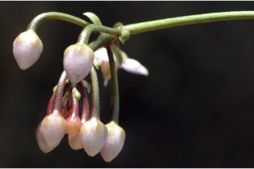

Small trees up to 6 m tall.
6 ಮೀ. ಎತ್ತರದವರೆಗಿನ ಸಣ್ಣ ಮರಗಳು.
Small trees up to 6 m tall.
சிறியமரங்கள் 6 மீ. உயரம் வரை வளரக்கூடியது.
Bark brown, smooth.
ತೊಗಟೆ ಕಂದು ಬಣ್ಣದಲ್ಲದ್ದು ನಯವಾಗಿರುತ್ತದೆ.
Bark brown, smooth.
மரத்தின் பட்டை ப்ரவுன் நிறமானது, வழவழப்பானது.
Young branchlets subterete, glabrous.
ಎಳೆಯ ಕಿರುಕೊಂಬೆಗಳು ಉಪ-ದುಂಡಾಗಿದ್ದು ರೋಮರಹಿತವಾಗಿರುತ್ತವೆ.
Young branchlets subterete, glabrous.
சிறியநுனிக்கிளைகள் குறுக்குவெட்டுத் தோற்றத்தில் வளையமானது, உரோமங்களற்றது.
Leaves simple, alternate, spiral; petiole ca. 1 cm long, stout, canaliculate, glabrous; lamina 10-21.5 (34) x 4-7.5 (11.5) cm, elliptic-obovate or oblanceolate, apex acute to acuminate, base attenuate to cuneate, margin entire or obscurely crenate towards apex, glabrous, glaucous beneath, coriaceous, gland dotted; midrib flat above; secondary_nerves 9-20 pairs, slender; tertiary_nerves broadly reticulate or obscure.
ಪುಷ್ಪ ಮಂಜರಿಗಳು ಅಕ್ಷಾಕಂಕುಳಿನ ಅಥವಾ ಪಾರ್ಶ್ವದಲ್ಲಿರುವ ಪೀಠಛತ್ರ ಮಾದರಿಯಲ್ಲಿರುತ್ತವೆ; ಹೂಗಳು ನಸುಗೆಂಪು ;ವೃಂತ 12 ಸೆಂ.ಮೀ. ವರೆಗಿನ ಉದ್ದವನ್ನು ಹೊಂದಿರುತ್ತದೆ.
Leaves simple, alternate, spiral; petiole ca. 1 cm long, stout, canaliculate, glabrous; lamina 10-21.5 (34) x 4-7.5 (11.5) cm, elliptic-obovate or oblanceolate, apex acute to acuminate, base attenuate to cuneate, margin entire or obscurely crenate towards apex, glabrous, glaucous beneath, coriaceous, gland dotted; midrib flat above; secondary_nerves 9-20 pairs, slender; tertiary_nerves broadly reticulate or obscure.
இலைகள் தனித்தவை, மாற்றுஅடுக்கமானவை, சுழல் போன்று அமைந்தவை; இலைக்காம்பு 1 செ.மீ. நீளமானது, தடித்தவை, குறுக்குவெட்டுத் தோற்றத்தில் கேனாலிகுலேட், உரோமங்களற்றது; இலை அலகு 10-21.5 (34) x 4-7.5 (11.5) செ.மீ., நீள்வட்ட-தலைகீழ் முட்டை வடிவானது அல்லது தலைகீழ் ஈட்டி வடிவானது, அலகின் நுனி கூரியது முதல் அதிக்கூரியது, அலகின் தளம் அட்டனுவேட் முதல் ஆப்பு வடிவானது, அலகின் விளிம்பு முழுமையானது அல்லது அலகின் நுனிப்பகுதி தெளிவற்ற பிறை போன்ற பற்களுடையது, உரோமங்களற்றது, அலகின் கீழ்பரப்பு மெழுகுபூசியது (க்களாக்கஸ்) போன்றது, கோரியேசியஸ், ஒளிபுகும் சுரப்பி புள்ளிகளுடையது; மையநரம்பு மேற்பரப்பில் அலகின் பரப்பிற்கு சமமானது; இரண்டாம் நிலை நரம்புகள் 9-20 ஜோடிகள், மெல்லியது; மூன்றாம் நிலை நரம்புகள் அகன்ற வலைப்பின்னல் போன்றவை அல்லது கண்களுக்கு புலப்படாது.
Inflorescence axillary or lateral umbels; flowers pink; peduncle up to 12 cm long.
ಬೆರ್ರಿ ಫಲಗಳು ಗೋಳಾಕಾರದಲ್ಲಿದ್ದು 0.8 ಸೆಂ.ಮೀ. ಅಡ್ಡಗಲತೆ ಹೊಂದಿದ್ದು ಕಡುಕೆಂಪಾಗಿರುತ್ತದೆ; ಬೀಜ ಒಂದು.
Inflorescence axillary or lateral umbels; flowers pink; peduncle up to 12 cm long.
மஞ்சரி இலைக்கோணங்களில் காணப்படும் அல்லது பக்கவாட்டில் காணப்படுபவை, அம்பல் வகை மஞ்சரி; மலர்கள் பிங்க் நிறமானது; மஞ்சரிக்காம்பு 12 செ.மீ. நீளமானது.
Berry, globose, 0.8 cm across, bright red; seed one.
Berry, globose, 0.8 cm across, bright red; seed one.
முழுச்சதைகனி (பெர்ரி), கோளவடிவானது, 0.8 செ.மீ. குறுக்களவுடையது, சிவப்பு நிறமானது; ஒரு விதையுள்ள கனி.
 


